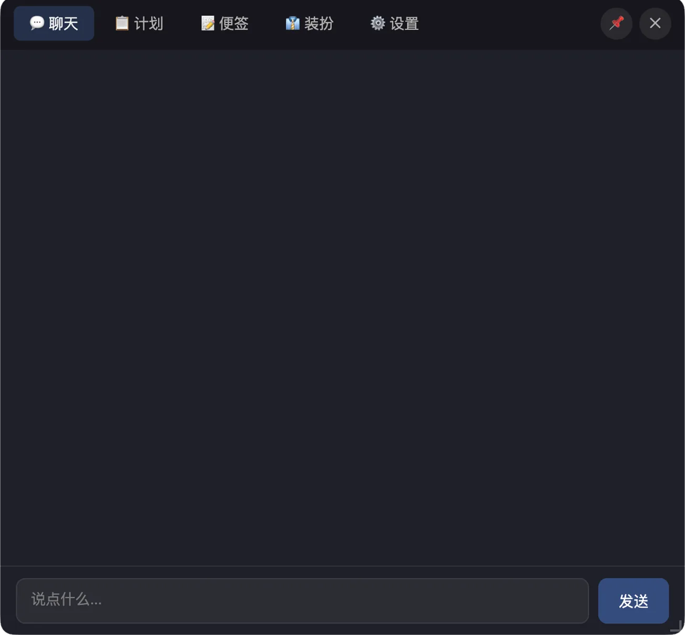
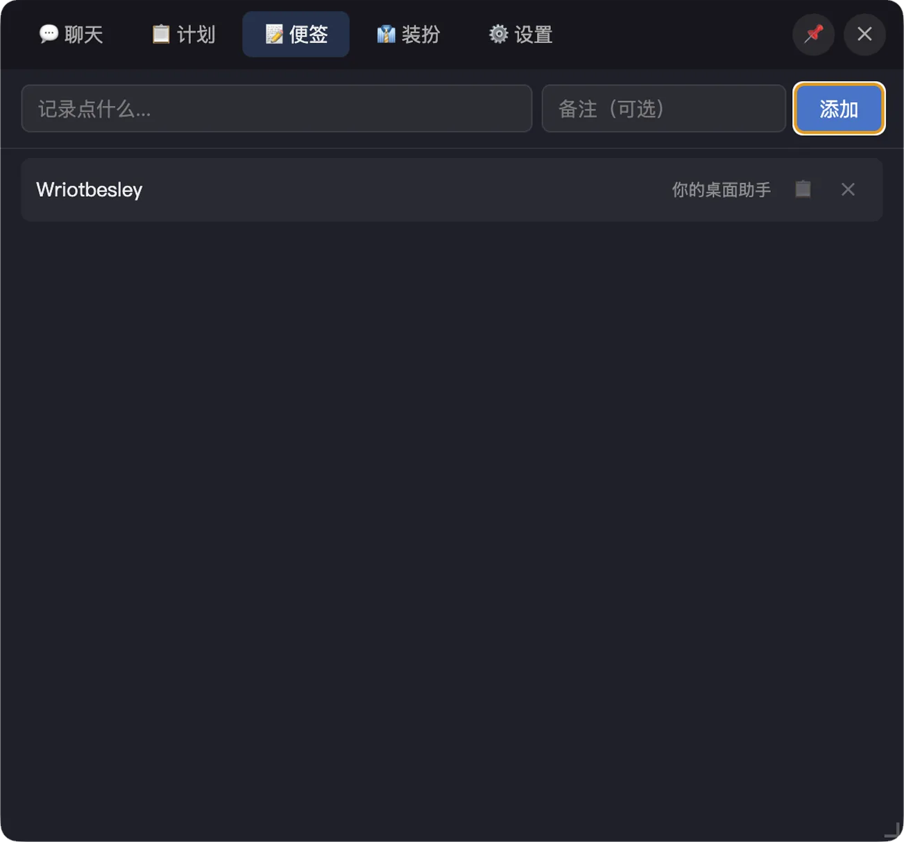
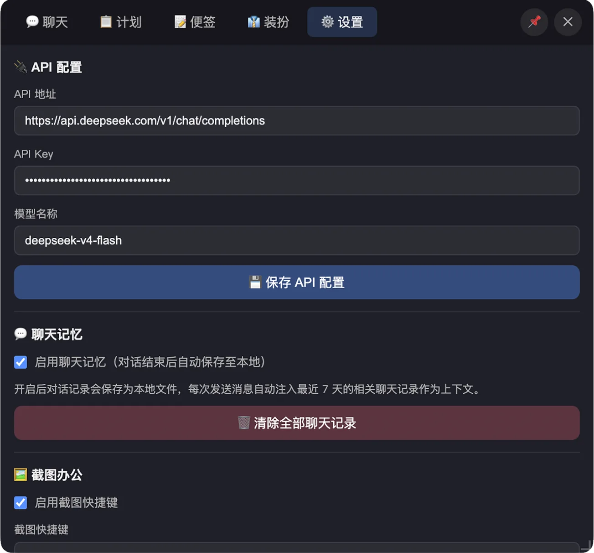
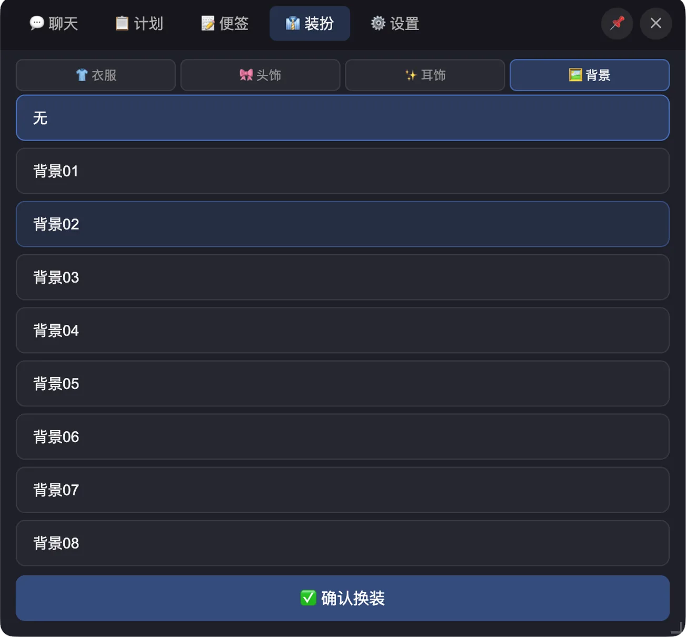

← 返回项目索引
AI 桌面助手
独立设计并开发的桌面助手，提供计划、便签、聊天与配置管理，接入 AI 完成任务操作和周报生成。
角色独立产品设计与开发
能力自然语言任务 / 云同步
平台Windows / macOS
01 / PRODUCT LOOP
自然语言任务操作
接入 DeepSeek，完成上下文管理、结构化指令解析与校验，支持通过自然语言创建和管理任务，并基于计划记录生成周报。


02 / DAILY USE
多窗口与数据同步
实现多窗口通信、账号认证及计划、便签、聊天、配置四类数据云同步；本地计划数据采用原子写入、串行写入锁与备份恢复机制。


